SmartTools Add-on Manual / Overall Management
Smart Tools Manager Manual
Version 1.0.0 / November 19, 2026 / For Blender 5.1.2
Smart Tools Manager is a tool for managing all of SmartTools. When you install many Smart Tools add-ons, the tabs in the Sidebar (N panel) pile up and become hard to find. With this tool, you decide whether each Smart Tools panel appears or not for each combination of a "Workspace" (a screen layout for a particular kind of work) and an "Editor" (a type of screen, such as the 3D Viewport or the Image Editor). It does not enable or disable the add-ons themselves. It only switches panel visibility. It also includes "Release Cleanup", which makes a copy of your .blend file without unneeded working data. For the shared basics of installation, Japanese localization, and the "?" help button, see the relevant chapter of the SmartTools Overall Specification.
1. What This Add-on Does
A tool for managing all of SmartTools. In one screen, you decide which Smart Tools panels appear for each combination of Workspace and Editor.
- For each combination of Workspace and Editor, switch the panels of 21 Smart Tools between "Enabled" and "Disabled". At first, every tool is "Enabled". "All Enabled" and "All Disabled" switch the whole list at once.
- For each Smart Tool, shows the rule's ON / OFF state side by side with whether the add-on itself is enabled.
- Saves your settings to a settings file, so the same settings return even after you restart Blender.
- Shows a "Smart Tools" button on the bar at the very top of the screen (the Top Bar), and you can open the Manager screen from it. The button is not shown at first, so turn on "Top Bar Button" in the add-on section of Preferences.
- Re-reads the settings file to check its contents, and restores from a backup when needed (reload).
- Shows the "Runtime Message" when a problem occurs, and lets you copy the full text.
- With "Release Cleanup", creates a new .blend copy that omits only the unneeded data you choose. The original file is not changed.
- When you want only modeling tools in a modeling Workspace, and only animation tools in an animation Workspace.
- When you want to keep unrelated Smart Tools tabs out of the Sidebar of the Image Editor or the Node Editor.
- When you want a copy of your .blend without leftover working data before delivering or sharing it.
At a Glance
This is how the screen changes when you use this add-on. Chapter 5 walks through the exact steps in the "Example" boxes for each feature.
ExampleHide the Tabs of Tools You Do Not Use in This Workspace(demonstrated on the 3D Viewport Sidebar)
When you set a tool to "Disabled" in the Manager, that tool's tab disappears right away from the Sidebar of the Workspace and Editor you selected. You can keep the Sidebar tabs to only the ones you need for the current work. In the Japanese UI, the same localized names are shown for the list's column names and the actual Sidebar tabs.
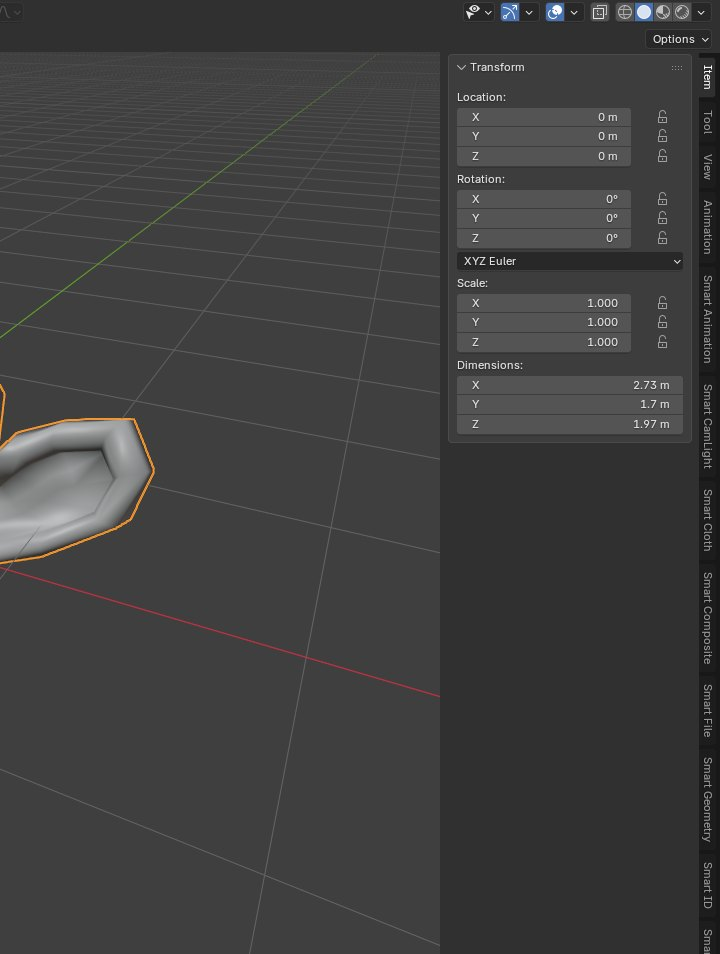

- Open the Manager screen.
- Select "Layout" in the "Workspace" column and "3D Viewport" in the "Editor with N-panel" column.
- In the "Smart Tools" column, click "Enabled" for the tool you want to hide (here, "Smart File") so it becomes "Disabled".
- Click "OK" at the bottom of the screen to close it.
What to look for: Compare the tabs lined up vertically at the right edge of the 3D Viewport's Sidebar. Before, there is a "Smart File" tab between "Smart Composite" and "Smart Geometry"; after, that tab is gone and the tabs below it move up. The other tabs remain. When you set it back to "Enabled", as in the last figure, the tabs line up as they were.
ExampleMake a Copy Without the Hidden Work Box(demonstrated on Suzanne and a hidden work box)
Select the work box, whose display and render are both turned off, together with its mesh, and make a copy without the box. The original file that is open is not changed.

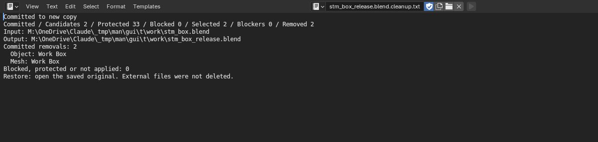
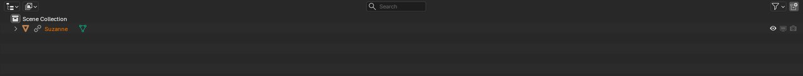
- Select the work box. In the "Visibility" section of the Object tab (the orange square icon) in the Properties Editor, uncheck both "Viewports" and "Renders" under "Show In", and save the file (hiding it with the Outliner's eye icon is not enough).
- On the Manager screen, click "Release Cleanup".
- Page through "Target page", and check the object "Work Box" and the mesh "Work Box".
- Check the save location under "New copy", then click "Apply to Copy" and confirm.
What to look for: The Outliner in the previous figure has "Work Box", but the copy that was created contains only Suzanne. In the .cleanup.txt created next to the copy, what was removed is written as "confirmed actual deletions".
2. Key Features
This chapter walks through the features unique to this add-on, using numbered callouts on each figure. The numbers in a figure match the numbered list below it. Click a figure to enlarge it. Each individual setting is described under its own heading in Chapter 5.
2-1. Manage the Panels of All SmartTools in One ScreenTop Selling Point
Smart Tools Manager is a tool for managing all of SmartTools. In one screen, you decide whether the panels of the 21 Smart Tools are shown or hidden for each combination of the 16 Workspaces and 17 Editors. Even if you install many Smart Tools, you can keep the Sidebar (N panel) tabs to only the ones you need for the current work.
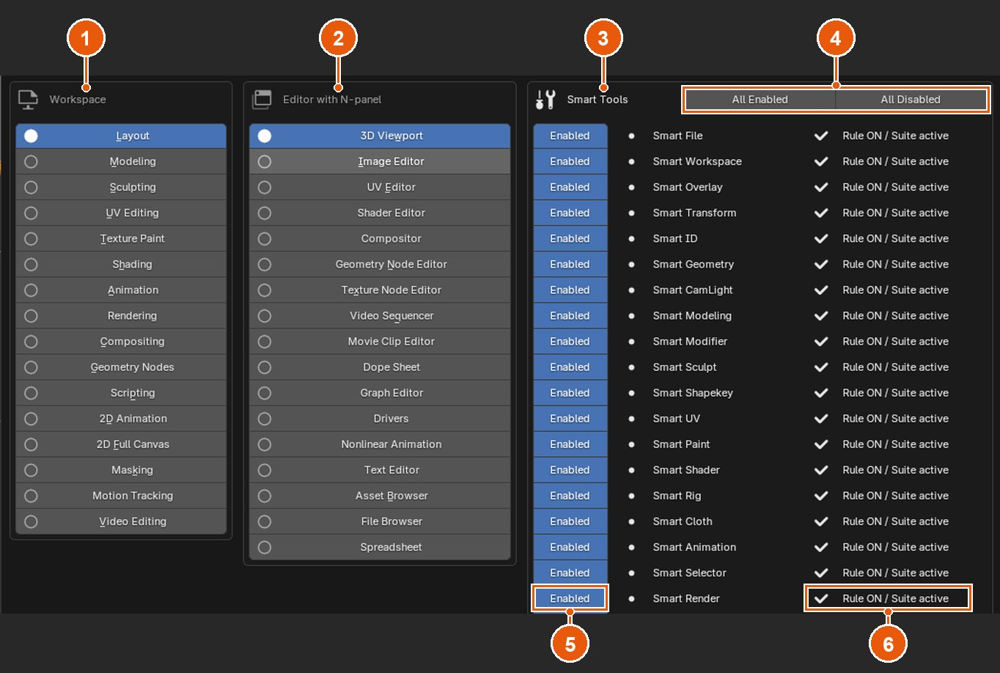
- 1"Workspace": Choose one Workspace to set. 16 are listed, such as "Layout" and "Modeling".
- 2"Editor with N-panel": Choose one Editor to set. 17 are listed, such as "3D Viewport" and "Image Editor".
- 3"Smart Tools": The 21 Smart Tools are listed in a fixed order. For the combination you chose in ① and ②, decide for each tool whether its panel appears.
- 4"Enable All" and "Disable All": Sets the tools of the selected combination to "Enabled" or "Disabled" all at once. Other combinations are not changed.
- 5"Enabled" / "Disabled": Switches with each click, and the Sidebar tab appears or disappears right away. If saving is on, it is saved the moment you click.
- 6Status display: The check-shaped "Rule ON / Suite active" means the panel is shown. The funnel shape means it is set not to appear in this combination, and the broken-chain shape and the closed-eye shape mean the add-on itself is not enabled.
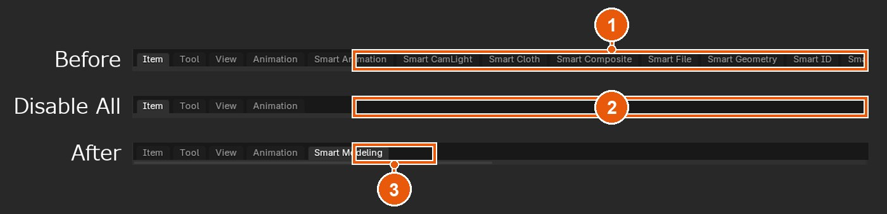
- 1Before: From "Smart Animation" to the right, Smart Tools tabs are lined up and continue beyond the figure.
- 2After "Disable All": All the Smart Tools tabs disappear. The remaining "Item", "Tool", "View", and "Animation" are Blender's own tabs.
- 3"Smart Modeling": Only the Smart Modeling tab, which you set back to "Enabled", appears.
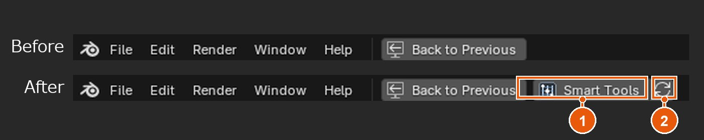
- 1"Smart Tools": Click to open the Manager screen. "Top Bar Button" is off at first, so turn it on in the "Resident Feature Toggles" section.
- 2Circular arrow (Reload Smart Tools): Re-reads the settings file once and checks its contents. It does not reload the individual Smart Tools.
- Click "Smart Tools" in the Top Bar to open the Manager screen (you can also open it with "Open Smart Tools Manager" in Preferences).
- Select a Workspace in the left column and an Editor in the middle column.
- Click "Enabled" for each tool you want to hide, so it becomes "Disabled". To keep only a few, click "All Disabled" first, and then set the tools you want to keep to "Enabled".
- Click "OK" at the bottom of the screen to close it.
- Only panel visibility changes. Enabling or disabling the add-ons themselves is done in the add-on list in Preferences.
- At first, every tool is "Enabled" in every combination.
- Switching takes effect the moment you click. Whether you close with "OK" or "Cancel", it is not reverted.
- "N-panel State Save" is on from the start, and each switch is saved to the settings file immediately.
Settings in detail: 5-4. The Top Strip of the Manager Screen, 5-7. The "Smart Tools" Column, 5-3. The "Smart Tools" Button in the Top Bar
2-2. Just Switch Workspace and Editor, and the Tabs Switch TooSee It in Pictures
The rules are remembered for each combination of Workspace and Editor. Just by switching the Workspace tab, the Sidebar tabs also switch to the tools for that work. Even within the same Workspace, you can show different tools in the 3D Viewport and in the Image Editor.
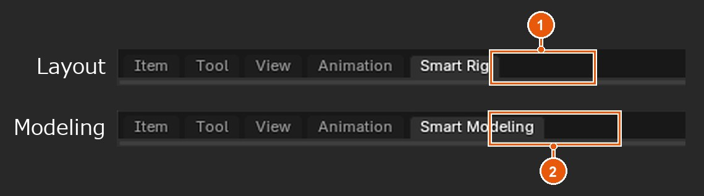
- 1"Smart Rig": In "Layout", the only Smart Tools tab is Smart Rig.
- 2"Smart Modeling": When you switch to "Modeling", the only tab is Smart Modeling.
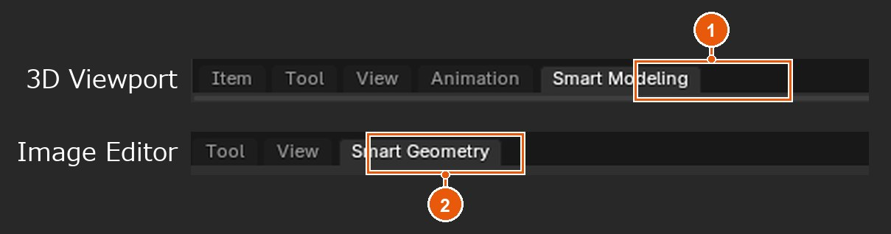
- 1"Smart Modeling": In the 3D Viewport, Smart Modeling appears and Smart Geometry does not.
- 2"Smart Geometry": In the Image Editor, conversely, Smart Geometry appears and Smart Modeling does not.
- In the "Workspace" column, select "Layout", click "All Disabled", and then set only Smart Rig to "Enabled".
- Select "Modeling", click "All Disabled", and then set only Smart Modeling to "Enabled".
- Click "OK", and switch between "Layout" and "Modeling" with the tabs at the top of the screen.
- To change it for each Editor, select an Editor in the "Editor with N-panel" column, and then set "Enabled" and "Disabled" in the same way.
- Workspaces are identified by name. In a Workspace with a name that is not in the list (such as a name you gave it yourself), the rules do not work and all panels are shown.
- What you set in the Editor column is whether panels appear in that Editor's Sidebar. The Sidebar itself is not opened or closed.
- When you turn on "Source Panel Filters", a Smart Tool that is "Disabled" in every Editor of that Workspace stops working in that Workspace, add-on and all. Add-ons other than Smart Tools are not hidden. If you only want to hide tabs, you do not need to turn it on.
Settings in detail: 5-5. The "Workspace" Column, 5-6. The "N-Panel Editors" Column, 5-2. The "Resident Feature Toggles" Section
3. Getting Started
How to install the add-ons, how to change the interface language, and how the N panel and the "?" help buttons work in every add-on are covered in the "SmartTools Overall Specification". Please read chapters 2 to 5 there first.
| ZIP to install | SmartToolsManager_1.0.0.zip |
|---|---|
| Name shown in Blender | Smart Tools Manager |
| Supported Blender | 5.1.2 |
4. Where to Find It
This add-on has no panel of its own in the Sidebar (N panel). There are two ways in: the add-on section of Preferences, and the "Smart Tools" button in the Top Bar. The button is not shown at first, so turn it on in Preferences first.
| Editors | Preferences (add-on section), Top Bar (the bar at the very top of the screen) |
|---|---|
| Mode | Available in any mode |
- Open "Preferences" from the "Edit" menu, and in "Add-ons" expand the "Smart Tools Manager" row (click the arrow to the left of the name).
- Click "Resident Feature Toggles" to open the section, and turn on "Top Bar Button".
- A "Smart Tools" button appears on the left side of the bar at the very top of the screen (the Top Bar), after the Workspace tabs. From now on, click it to open the Manager. While "N-panel State Save" is on, the button stays visible even after you restart Blender.
- The icon with a circular arrow, just to the right of that button, is "Reload Smart Tools".
- You can also open the Manager screen by clicking "Open Smart Tools Manager" in the same section of Preferences.
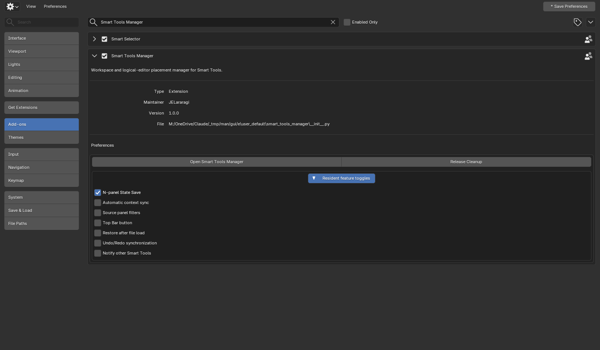
5. Features
Each heading is explained in order from the top of the panel. Click the "?" to the right of a heading to show the same explanation in Blender. The blue "Example" boxes show real operations on simple models such as Suzanne, with the 3D Viewport before and after.
5-1. The Add-on Section in Preferences
The section that appears when you expand the "Smart Tools Manager" row in Preferences. From here you can open the Manager screen and switch the features that run in the background.
Location"Edit" > "Preferences" > "Add-ons" > the "Smart Tools Manager" row.
| Item | What it does |
|---|---|
| Open Smart Tools Manager | Opens the Manager screen. |
| Release Cleanup | Opens the "Release Cleanup" screen. |
| Resident Feature Toggles | Click to open the section for background features. The items in it are the same as in the "The "Resident Feature Toggles" Section" section. They change the same settings as the Manager screen. |
- Open "Preferences" from the "Edit" menu.
- In "Add-ons", expand the "Smart Tools Manager" row.
- Click "Resident Feature Toggles" and check "Top Bar Button".
ExampleOpen the Settings from Preferences(demonstrated on the add-on section of Preferences)
When you expand the "Smart Tools Manager" row in Preferences, the button that opens the Manager screen and "Resident Feature Toggles" appear.
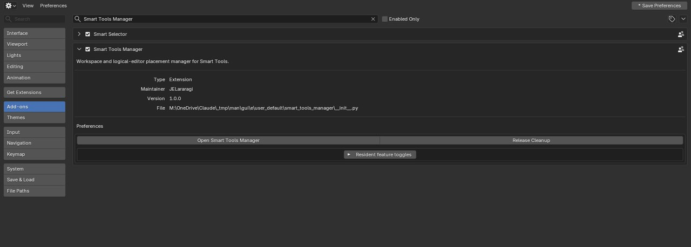
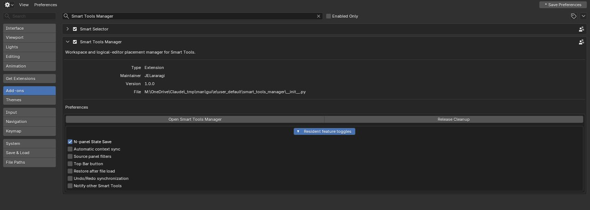
- Open "Preferences" from the "Edit" menu, and in "Add-ons" expand the "Smart Tools Manager" row.
- Click "Resident Feature Toggles" to open the section.
What to look for: When you expand the row, "Open Smart Tools Manager" and "Release Cleanup" are lined up at the very top. When you click "Resident Feature Toggles", checks such as "Top Bar Button" appear.
5-2. The "Resident Feature Toggles" Section
A section where you turn each of the Manager's background features on or off. It is closed at first.
LocationRight below "Release Cleanup" on the Manager screen, and in the add-on section of Preferences.
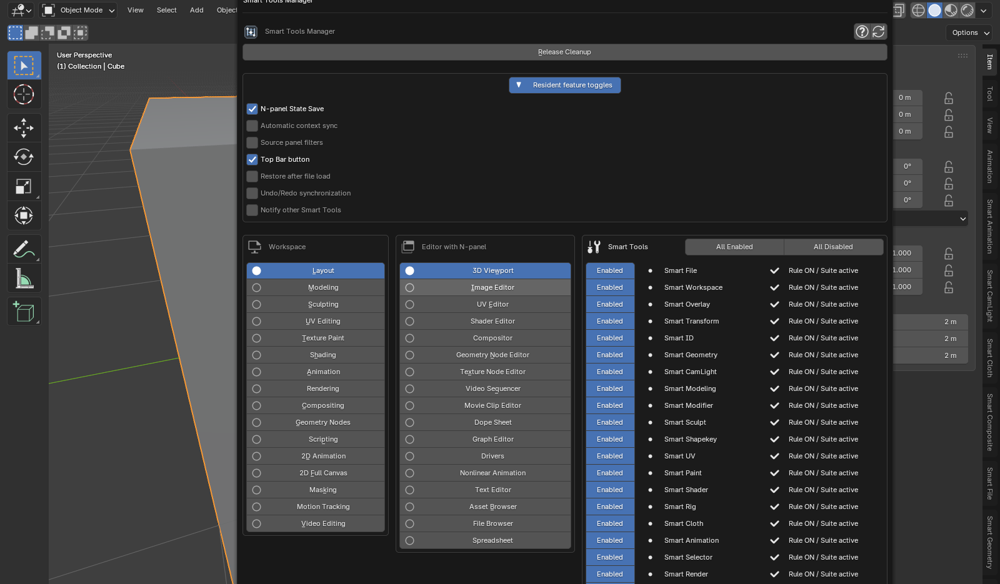
| Item | What it does |
|---|---|
| Resident Feature Toggles | Each click opens or closes this section. |
| N-panel State Save | Saves the Manager's settings to Smart_Tools_Manager/Smart_Tools_Manager_Suite.json in Blender's user settings folder (config). It is on from the start. If you turn it off, the settings are saved once at that moment, and later changes are not saved until you turn it back on. |
| Automatic context sync | When "Source Panel Filters" is also on, the Workspace add-on filter is updated the moment you switch "Enabled" or "Disabled". When it is off, the filter is updated when you click "OK" or an update button. No process that keeps running periodically is started. |
| Source Panel Filters | When on, the Blender Workspace add-on filter is applied according to the rules. A Smart Tool that is "Disabled" in every Editor of that Workspace stops working in that Workspace, add-on and all, not just its panels. Add-ons other than Smart Tools are not hidden. However, add-ons you removed yourself with Blender's filter ("Filter Add-ons" on the Tool tab of the Properties Editor) stay removed. In a Workspace that was already using the filter before you turned this on, the Manager and Smart Tools are simply added while the existing filter is kept. When you turn it off, the filter changes made by the Manager are undone. If you only want to hide tabs, you do not need to turn this on. |
| Top Bar Button | Shows the "Smart Tools" button in the Top Bar. It is off at first. |
| Restore After File Load | After you open a .blend file, restores the Manager's settings from the settings file. |
| Undo/Redo Synchronization | After you "Undo" or "Redo", re-syncs the Manager's settings. |
| Notify Other Smart Tools | Exposes a mechanism that lets enabled Smart Tools receive notifications about Manager changes. |
- Click "Resident Feature Toggles" to open the section.
- Check the box to the left of the name of the feature you want to use.
ExampleTurning On the Filter Does Not Hide Other Add-ons(demonstrated on the render settings in the Properties Editor (Cycles))
When you turn on "Source Panel Filters", Smart Tools that are "Disabled" are removed from the Workspace. Add-ons other than Smart Tools are not removed, so you can keep using things like the Cycles render settings.


- Set "Render Engine" to Cycles, and open the Render tab of the Properties Editor.
- On the Manager screen, click "All Disabled".
- Open "Resident Feature Toggles", check "Source Panel Filters", and click "OK".
What to look for: Before and after, the Cycles settings sections (such as Sampling) do not change. Cycles is also an add-on, but it stays in the filter list, so it is not hidden.
ExampleAn Add-on You Removed Yourself Stays Removed(demonstrated on the render settings in the Properties Editor (Cycles))
Even while "Source Panel Filters" is on, an add-on you removed with Blender's filter does not return to the list. It is the same whether you open the Manager screen or click "OK".

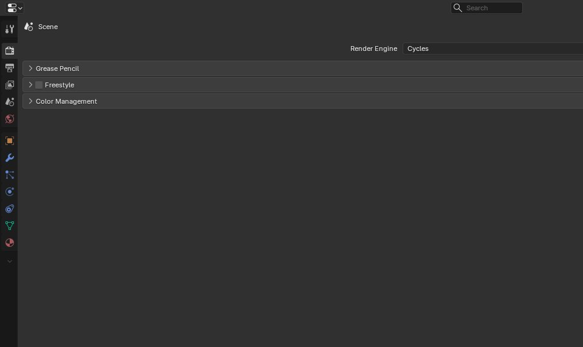
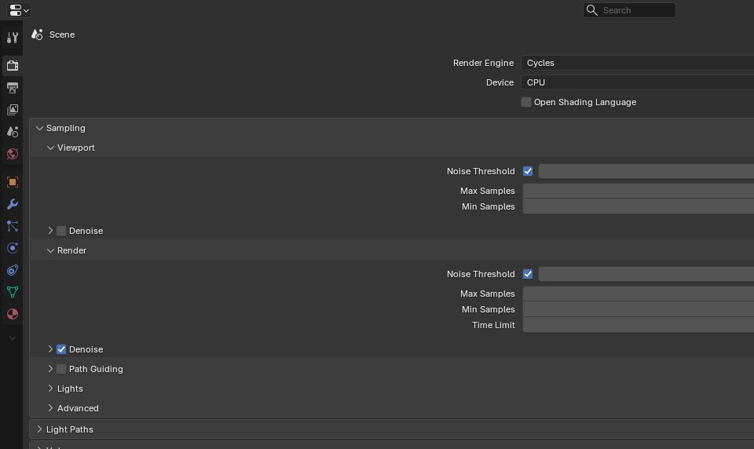
- Set "Render Engine" to Cycles, and turn on "Source Panel Filters".
- On the Tool tab of the Properties Editor, open the "Workspace" section, and uncheck Cycles in the "Filter Add-ons" list.
- Open the Manager screen, click "OK", and go back to the Render tab.
What to look for: The Cycles settings sections stay gone. When you turn "Source Panel Filters" off, the filter is released and the Cycles settings sections come back.
5-3. The "Smart Tools" Button in the Top Bar
A button that opens the Manager screen, and a button that re-reads the settings file.
LocationOn the left side of the bar at the very top of the screen (the Top Bar), after the Workspace tabs. Shown only while "Top Bar Button" is on.
| Item | What it does |
|---|---|
| Smart Tools | Opens the Manager screen (Smart Tools Manager). Click "OK" at the bottom of the screen to close it. If "Source Panel Filters" is on, this also re-syncs the Workspace add-on filter to the current settings. |
| Reload Smart Tools (circular arrow icon) | Reads the settings file Smart_Tools_Manager_Suite.json once and checks its contents. When needed, it restores from the backup and applies the result. It does not reload the individual Smart Tools themselves. |
- In the add-on section of Preferences, or in "Resident Feature Toggles" on the Manager screen, turn on "Top Bar Button".
- Click "Smart Tools" in the Top Bar.
ExampleShow the "Smart Tools" Button in the Top Bar(demonstrated on the bar at the very top of the screen (the Top Bar))
When you check "Top Bar Button", the "Smart Tools" button appears on the left side of the Top Bar. From then on, you can open the Manager screen with this button.
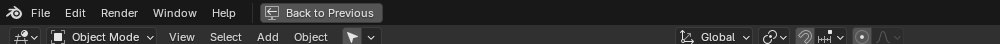
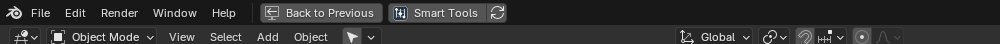
- In "Add-ons" in Preferences, expand the "Smart Tools Manager" row (it is the same on the Manager screen).
- Click "Resident Feature Toggles" to open the section.
- Check "Top Bar Button".
What to look for: Look to the right of "Help" in the bar at the very top. In the "After" figure, the "Smart Tools" button and an icon with a circular arrow to its right have been added. In the normal screen, they appear after the Workspace tabs.
5-4. The Top Strip of the Manager Screen
The heading and buttons at the very top of the Manager screen, plus "OK" and "Cancel" at the bottom of the screen.
LocationThe upper part of the Manager screen.
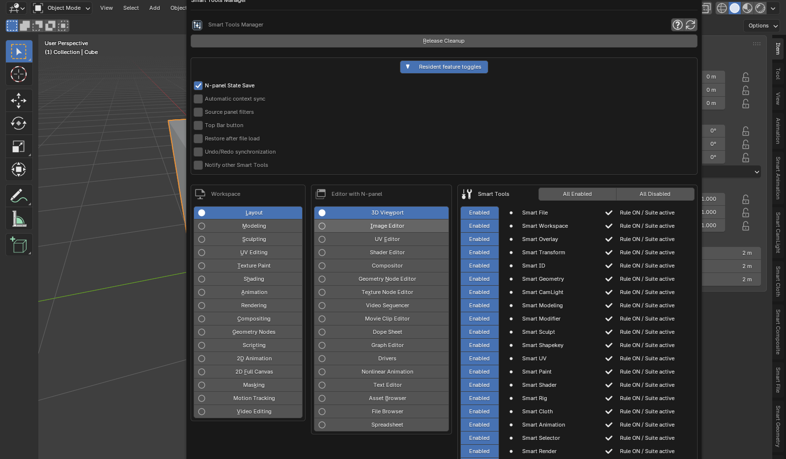
| Item | What it does |
|---|---|
| Smart Tools Manager | The heading of the screen. |
| ? (Smart Tools Manager Help) | Shows how to use the Manager's settings, saving, and restoring. |
| Circular arrow icon (Refresh Smart Tools Manager) | Refreshes the Manager's status display from the settings in memory. When "Source Panel Filters" is on, it also re-syncs the Workspace add-on filter. It does not re-read the settings file. It also does not reload, enable, or disable any individual Smart Tool. |
| Release Cleanup | Opens the "Release Cleanup" screen. |
| Resident Feature Toggles | Click to open the section for background features. The items in it are described in the "The "Resident Feature Toggles" Section" section. |
| OK / Cancel (bottom of the screen) | "OK" closes the screen. When "Source Panel Filters" is on, closing also re-syncs the Workspace add-on filter to the current rules. "Cancel" just closes. Whichever you use to close, the "Enabled" / "Disabled" switches and resident features you changed on the screen were already applied when you clicked them, and they are not reverted. |
5-5. The "Workspace" Column
A column where you choose one Workspace to set rules for.
LocationThe left column of the Manager screen.
| Item | What it does |
|---|---|
| Layout / Modeling / Sculpting / UV Editing / Texture Paint / Shading / Animation / Rendering | The Workspace you click is selected and marked with a circle. The "Smart Tools" column on the right switches to that Workspace's settings. |
| Compositing / Geometry Nodes / Scripting / 2D Animation / 2D Full Canvas / Masking / Motion Tracking / Video Editing | In the same way, click to select a Workspace. You can choose from 16 in total. |
ExampleShow Different Tabs in Each Workspace(demonstrated on the 3D Viewport Sidebar)
Set different tools to "Enabled" in "Layout" and "Modeling". When you switch the Workspace tab, the Sidebar tabs switch too.
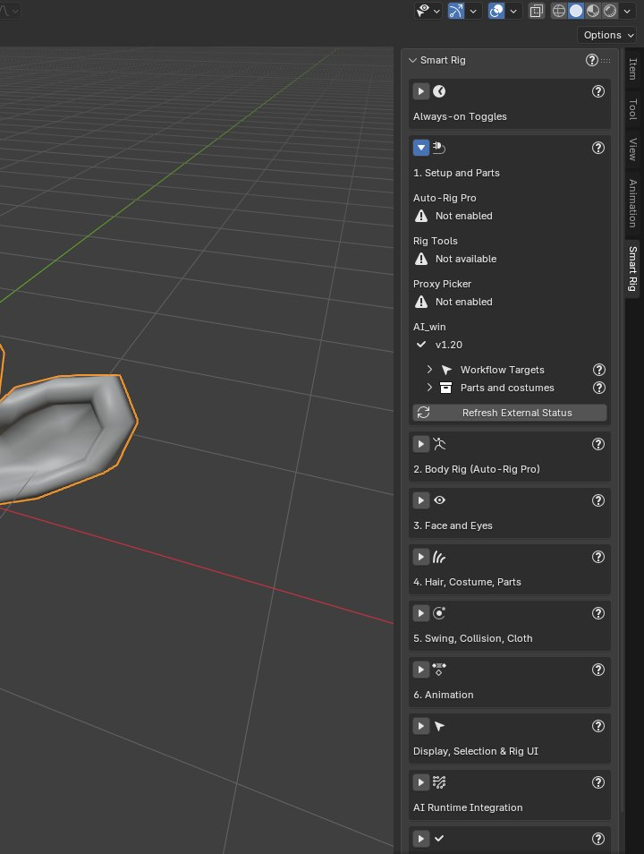
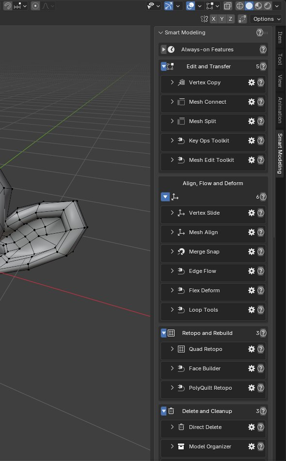
- On the Manager screen, select "Layout" in the "Workspace" column, click "All Disabled", and then set only Smart Rig to "Enabled".
- Select "Modeling" in the "Workspace" column, click "All Disabled", and then set only Smart Modeling to "Enabled".
- Click "OK".
- Switch between "Layout" and "Modeling" with the tabs at the top of the screen.
What to look for: Even with the same Suzanne in the same file, just by switching the Workspace, the tab at the right edge of the Sidebar changes from "Smart Rig" to "Smart Modeling".
5-6. The "N-Panel Editors" Column
A column where you choose one Editor (type of screen) to set rules for.
LocationThe middle column of the Manager screen.
| Item | What it does |
|---|---|
| 3D Viewport / Image Editor / UV Editor / Shader Editor / Compositor / Geometry Node Editor | The Editor you click is selected, and the "Smart Tools" column on the right switches to the settings for that combination. |
| Texture Node Editor / Video Sequencer / Movie Clip Editor / Dope Sheet / Graph Editor / Drivers | In the same way, click to select an Editor. |
| Nonlinear Animation / Text Editor / Asset Browser / File Browser / Spreadsheet | In the same way, click to select an Editor. You can choose from 17 in total. |
ExampleShow Different Tabs in Each Editor(demonstrated on the Sidebars of the 3D Viewport and the Image Editor)
Even within the same Workspace, you can change which tools are "Enabled" for each Editor.

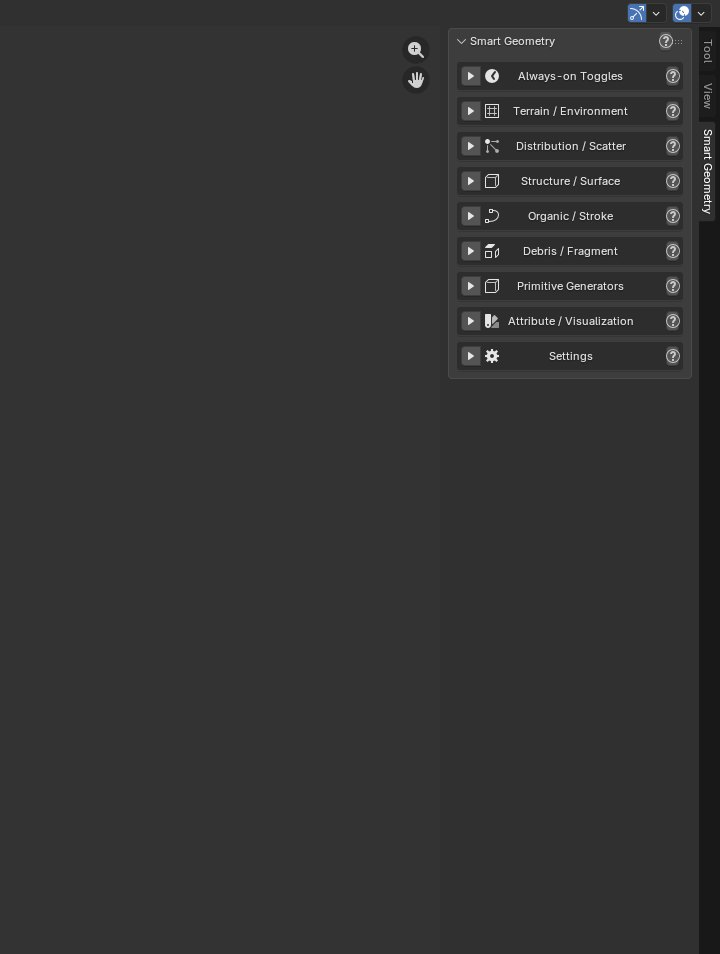
- On the Manager screen, select "3D Viewport" in the "Editor with N-panel" column, click "All Disabled", and then set only Smart Modeling to "Enabled".
- Select "Image Editor", click "All Disabled", and then set only Smart Geometry to "Enabled".
- Click "OK" to close, and compare the Sidebars of the 3D Viewport and the Image Editor.
What to look for: In the 3D Viewport, the Smart Modeling tab appears and Smart Geometry does not. In the Image Editor, conversely, Smart Geometry appears and Smart Modeling does not.
5-7. The "Smart Tools" Column
A column where you decide whether each Smart Tools panel appears, for the selected combination of Workspace and Editor.
LocationThe right column of the Manager screen.
| Item | What it does |
|---|---|
| All Enabled / All Disabled (right of the heading) | For the selected combination of Workspace and Editor, sets all the tools in the list to "Enabled" or "Disabled" at once. Other combinations are not changed. |
| Enabled / Disabled (button on the left) | Switches with each click. When "Enabled", that tool's panel appears in the selected combination. When "Disabled", it is hidden. While saving is on, it is saved the moment you click. |
| Tool names | The 21 tools "Smart File", "Smart Workspace", "Smart Overlay", "Smart Transform", "Smart ID", "Smart Geometry", "Smart CamLight", "Smart Modeling", "Smart Modifier", "Smart Sculpt", "Smart Shapekey", "Smart UV", "Smart Paint", "Smart Shader", "Smart Rig", "Smart Cloth", "Smart Animation", "Smart Selector", "Smart Render", "Smart Node", and "Smart Composite" are listed in this order. In the Japanese UI, the column names in this list also show the same localized names as the Sidebar tabs (this applies to Smart Workspace, Smart Overlay, Smart Transform, Smart Modifier, Smart Sculpt, Smart UV, Smart Paint, Smart Shader, Smart Rig, Smart Selector, and Smart Render). |
| Rule ON / Suite Enabled | Shown with a check-shaped icon. The rule is ON, and that tool's add-on itself is enabled. The panel is shown. |
| Rule OFF / Suite Enabled | Shown with a funnel-shaped icon. The add-on itself is enabled, but it is set not to show its panel in this combination. |
| Rule ON / Suite Disabled | Shown with a broken-chain icon. The rule is ON, but that tool's add-on itself is not enabled. |
| Rule OFF / Suite Disabled | Shown with a closed-eye icon. The rule is OFF, and the add-on itself is not enabled either. |
| Error | A problem has occurred with that tool. See the "Runtime Message" below. |
- Select a Workspace in the left column.
- Select an Editor in the middle column.
- Click "Enabled" for each tool whose panel you want to hide, so it becomes "Disabled". To keep only a few, click "All Disabled" first, and then set the tools you want to keep to "Enabled".
- Click "OK" at the bottom of the screen to close it.
ExampleHide the Tabs of Tools You Do Not Use in This Workspace(demonstrated on the 3D Viewport Sidebar)
When you set a tool to "Disabled" in the Manager, that tool's tab disappears right away from the Sidebar of the Workspace and Editor you selected. You can keep the Sidebar tabs to only the ones you need for the current work. In the Japanese UI, the same localized names are shown for the list's column names and the actual Sidebar tabs.
- Open the Manager screen.
- Select "Layout" in the "Workspace" column and "3D Viewport" in the "Editor with N-panel" column.
- In the "Smart Tools" column, click "Enabled" for the tool you want to hide (here, "Smart File") so it becomes "Disabled".
- Click "OK" at the bottom of the screen to close it.
What to look for: Compare the tabs lined up vertically at the right edge of the 3D Viewport's Sidebar. Before, there is a "Smart File" tab between "Smart Composite" and "Smart Geometry"; after, that tab is gone and the tabs below it move up. The other tabs remain. When you set it back to "Enabled", as in the last figure, the tabs line up as they were.
ExampleKeep Only the Smart Modeling Tab(demonstrated on the 3D Viewport Sidebar)
If you click "All Disabled" and then set just one tool to "Enabled", that is the only Smart Tools tab.

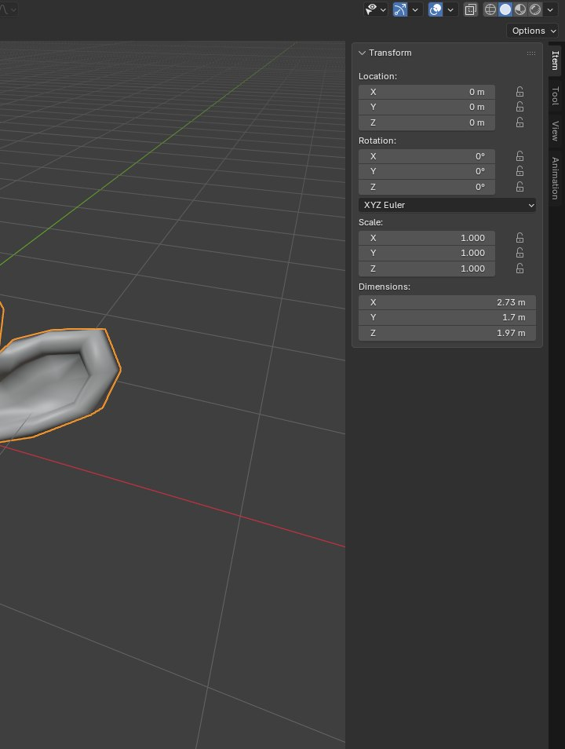
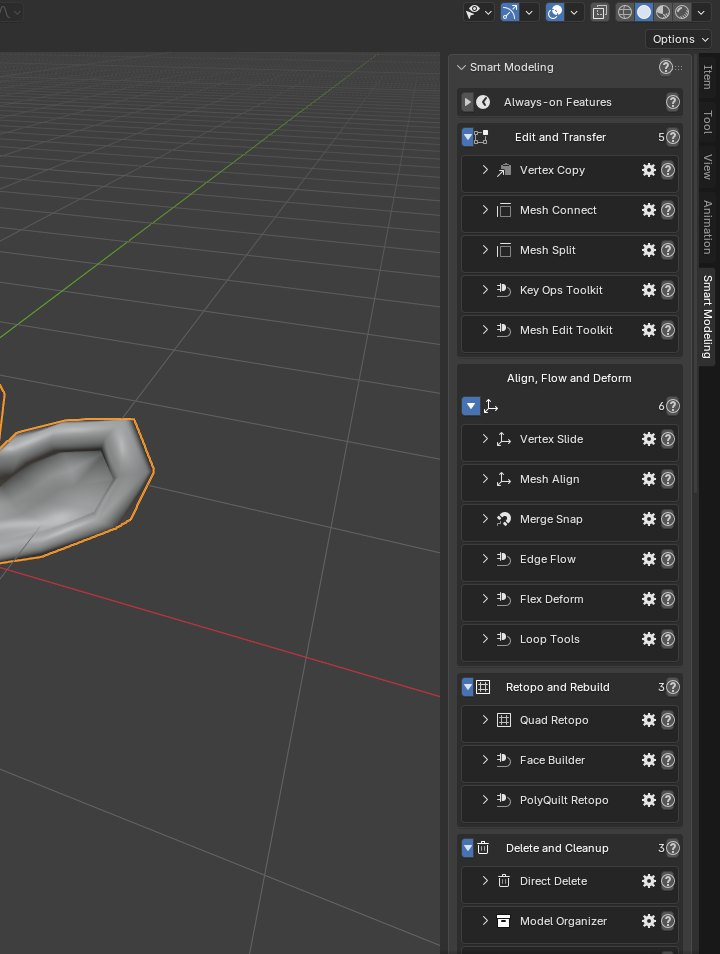
- On the Manager screen, select "Layout" and "3D Viewport".
- Click "All Disabled" to the right of the "Smart Tools" heading.
- Click "Disabled" for Smart Modeling so it becomes "Enabled".
- Click "OK" to close.
What to look for: Look at the number of tabs at the right edge of the Sidebar. "All Disabled" removes all the Smart Tools tabs, and only Smart Modeling, which you set to "Enabled", comes back. The "Item", "Tool", "View", and "Animation" tabs are Blender's own, so they remain.
5-8. Runtime Message
A field that appears when a problem occurs in the Manager, and the screen where you can see its full text.
LocationBelow the "Smart Tools" column. Shown only when there is a problem.
| Item | What it does |
|---|---|
| Runtime Message | Shows the content of the problem in a short sentence. |
| Open | Opens the full text of the message in a separate small screen. |
| Copy All | A button at the top of the opened screen. It copies the full text for inquiries, which is more detailed than the text on the opened screen (it includes technical details). |
- Click "Open".
- Click "Copy All" and paste it into your inquiry or similar.
5-9. Release Cleanup
A screen for creating a new copy of the current .blend that omits only the unneeded working data you choose. The original file that is open is not changed.
LocationOpens from "Release Cleanup" on the Manager screen.
![The "Release Cleanup" screen. The "Preservation contract (optional)", "New copy", and "Result JSON" fields, the "Inspect", "Apply to Copy", and "Export Result" buttons, the list of targets ("Preserve" rows are gray, and only "Candidate" rows can be selected), the summary row, and the blockers row. The file was opened without being saved, so "New copy" and "Result JSON" are empty and "Blockers" is 1. The unused camera "Camera" and material "Dots Stroke" also look like "Candidate", but in a saved file they become "Pending"](images/release_cleanup.png)
| Item | What it does |
|---|---|
| ? (Release Cleanup Help) | Shows what is covered, the steps, how to go back, and what it cannot do. |
| Preservation contract (optional) | Specifies a JSON file that lists things that must not be deleted. The only usable fields are preserve_names, preserve_ids, and preserve_all_for_dynamic_scripts. After you specify it, click "Inspect" to load it. It works without it. Using preserve_all_for_dynamic_scripts removes the script blocker, but it keeps all data, so no candidates remain to choose from. |
| New copy | Where the cleaned-up copy is saved. For a saved file, the original name with _release added is filled in from the start. |
| Result JSON | Where the result is written. For a saved file, the original name with _cleanup added is filled in from the start. |
| Inspect | Re-examines the contents of the file and how references are connected, without changing any data. All checks are cleared. It is also inspected automatically when the screen opens. |
| Apply to Copy | After a confirmation, creates a new cleaned-up copy without the items you checked. At least one check is required. The copy is made by running a separate Blender in the background, so your computer needs 10 GiB or more of free memory. Next to the copy, a .cleanup.json and a .cleanup.txt with the result are also created. Existing files are not overwritten. |
| Export Result | Writes the results of the inspection and deletion to a JSON file and to a TXT file readable in the screen's language. Existing files are not overwritten. |
| Target page | Pages through the data list. 8 rows are shown per page (up to 1500 pages). |
| The check on each row, and "Candidate", "Preserve", "Pending" | Each row shows the data type and name in a form like "Camera "Camera"" or "Mesh "Name"". Linked data gets "(Link: file name)" added. Only "Candidate" rows can be checked. "Preserve" and "Pending" rows are grayed out and cannot be selected. A reason appears under each row. Hover over the check to see all the reasons. Unused data is not included in the saved file, so in a file that is saved and unchanged, it becomes "Pending" (and it is not included in the copy either). In a file that has not been saved, it can look like a "Candidate". An object becomes a "Candidate" only if both its "Viewports" and "Renders" visibility are turned off. To turn them off, uncheck "Viewports" and "Renders" under "Show In" in the "Visibility" section of the Object tab (the orange square icon) in the Properties Editor (you can also turn them off with the monitor and camera icons, which you can show using "Restriction Toggles" in the Outliner filter). An object that is only hidden with the Outliner's eye icon stays "Preserve". |
| The summary row at the very bottom (example: "Inspected, not applied / Candidate 2 / Preserve 5 / Pending 0 / Selected 0 / Blockers 0 / Actual Deletions 0") | Shows the current state and the counts together. "Candidate", "Preserve", and "Pending" are the number of all rows in the list. "Selected" is the number of rows you checked. "Blockers" is the number of problems that stop "Apply to Copy", and you cannot apply unless it is 0. In a file that has not been saved, or one changed after saving, "Blockers" becomes 1 or more. "Actual Deletions" is the number actually removed. Run the inspection after saving has finished. If a script calls the inspection and the apply right after saving at the same time, it may be stopped as an unsaved change, for safety. |
| The blockers row (below the summary row) | When there are blockers, shows up to 3 of them below the summary row. You can read the rest with "Export Result". Example: for a file that has not been saved, it shows "A saved, unchanged input .blend is required". |
| OK / Cancel (bottom of the screen) | Both just close the screen. The cleaned-up copy is created only when you click "Apply to Copy". |
- Save the original .blend first.
- Click "Release Cleanup" to open the screen (it is inspected automatically at this time).
- While paging through "Target page", check only the working data that is fine to discard. Select unused objects together with their data (such as the mesh).
- Choose where to save with "New copy", then click "Apply to Copy" and confirm.
- If needed, keep the result with "Export Result".
ExampleMake a Copy Without the Hidden Work Box(demonstrated on Suzanne and a hidden work box)
Select the work box, whose display and render are both turned off, together with its mesh, and make a copy without the box. The original file that is open is not changed.
- Select the work box. In the "Visibility" section of the Object tab (the orange square icon) in the Properties Editor, uncheck both "Viewports" and "Renders" under "Show In", and save the file (hiding it with the Outliner's eye icon is not enough).
- On the Manager screen, click "Release Cleanup".
- Page through "Target page", and check the object "Work Box" and the mesh "Work Box".
- Check the save location under "New copy", then click "Apply to Copy" and confirm.
What to look for: The Outliner in the previous figure has "Work Box", but the copy that was created contains only Suzanne. In the .cleanup.txt created next to the copy, what was removed is written as "confirmed actual deletions".
ExampleRemove Only the Work Items from a File with a Rig(demonstrated on Suzanne and a rig)
Even in a file with a body that is moved by a rig, if you select only the hidden work box, you can make a copy that keeps the rig and the body.
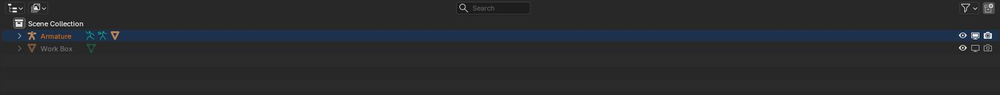
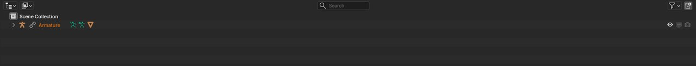
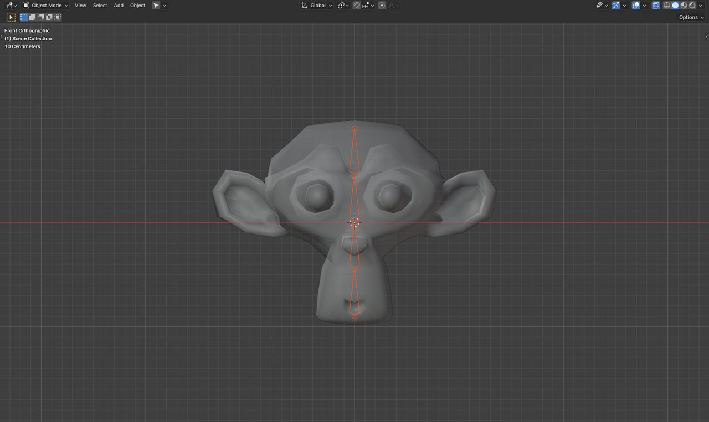
- Select the work box. In the "Visibility" section of the Object tab (the orange square icon) in the Properties Editor, uncheck both "Viewports" and "Renders" under "Show In", and save the file (hiding it with the Outliner's eye icon is not enough).
- Save the file, and after saving has finished, click "Inspect". Do not automatically run the inspection and the apply back to back right after saving.
- Click "Release Cleanup", and check the object "Work Box" and the mesh "Work Box".
- Click "Apply to Copy" and confirm.
- Open the copy that was created, and check the rig and the body.
What to look for: The "After" figure shows the contents of the created copy in the 3D Viewport. The rig's bones and the body remain. Only the work box has disappeared from the Outliner list.
ExampleOnly Hidden Items Become "Candidate"(demonstrated on the "Release Cleanup" screen)
When you open "Release Cleanup" on a saved file, only items whose display and render are both turned off, and their data, become "Candidate" and can be checked. Visible items are "Preserve" and cannot be selected.
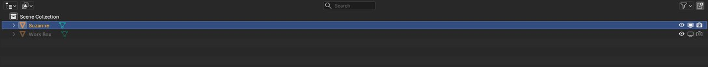
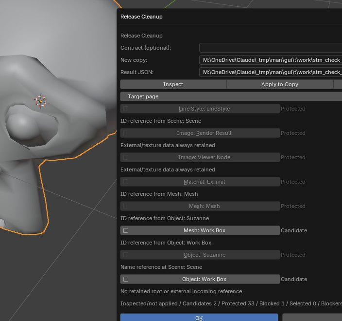
- Select the work box. In the "Visibility" section of the Object tab (the orange square icon) in the Properties Editor, uncheck both "Viewports" and "Renders" under "Show In", and save the file (hiding it with the Outliner's eye icon is not enough).
- Click "Release Cleanup".
- Page through "Target page", and look for the rows marked "Candidate".
What to look for: Only the rows for the mesh "Work Box" and the object "Work Box" are bright and can be checked. The Suzanne rows are gray "Preserve". Names are filled in from the start for "New copy" and "Result JSON". "Candidate" in the summary row is the number of candidate rows in the list, and "Selected" is the number of checks you made. "Blockers" is 0, so once you check items, you can "Apply to Copy".
ExampleYou Cannot Apply When a Script Is Included(demonstrated on a file with a script text)
If the file has a text containing words such as "import", it becomes a "Blocker", and you cannot "Apply to Copy". The reason appears at the very bottom of the screen.
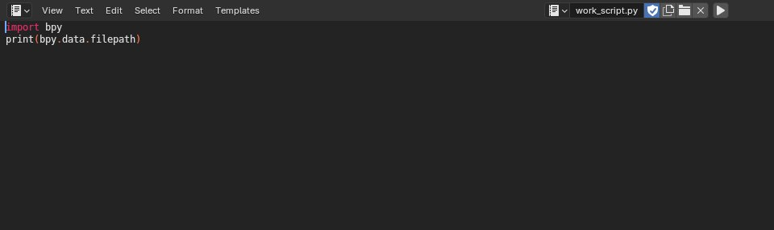
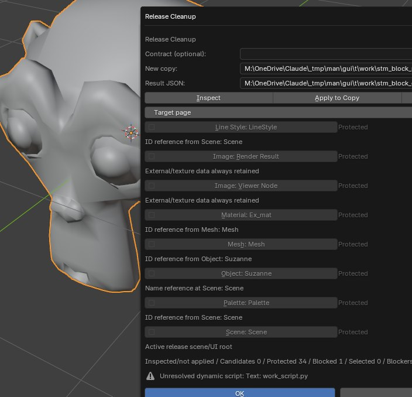
- Save a file that has a script in the Text Editor.
- Click "Release Cleanup".
- Look at the summary row at the very bottom and the row below it.
What to look for: "Blockers" in the summary row becomes 1, and the name of the text that caused it appears below. If you remove that text, save, and click "Inspect" again, it goes away.
Other Screens

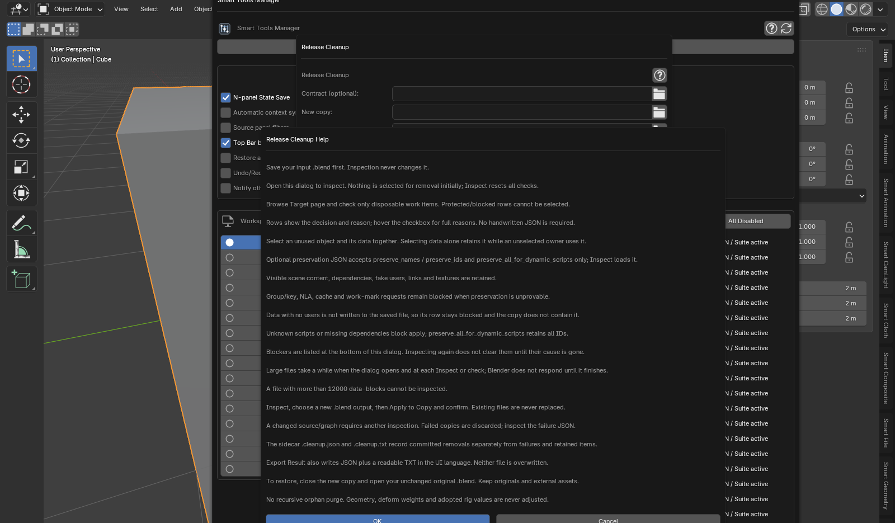
6. Common Tasks
Show Only Smart Modeling in the 3D Viewport of the Modeling Workspace
Makes the Sidebar easier to read while modeling.
- Click "Smart Tools" in the Top Bar.
- In the "Workspace" column, click "Modeling".
- In the "Editor with N-panel" column, click "3D Viewport".
- Click "All Disabled" to the right of the "Smart Tools" heading.
- Click "Disabled" for Smart Modeling so it becomes "Enabled".
- Click "OK" to close.
Result: In the 3D Viewport of the Modeling Workspace, the only Smart Tools tab in the Sidebar is Smart Modeling.
Reload Settings from the Settings File
When the settings look wrong, go back to the saved settings.
- Click the circular arrow icon to the right of "Smart Tools" in the Top Bar.
Result: The settings file is checked and re-read, and its contents are applied. A result message appears at the bottom of the screen.
Make a .blend Copy Without Unneeded Data
Before delivering or sharing, remove working data you are done with.
- Save the original .blend.
- On the Manager screen, click "Release Cleanup".
- From the "Candidate" rows, check only the items that are fine to discard. Select objects together with their meshes and so on.
- Check the save location under "New copy", then click "Apply to Copy" and confirm.
Result: A cleaned-up copy is created at the location you specified. The original file stays as it is.
Collect the Text of a Problem
Extract the full text of a problem for an inquiry.
- On the Manager screen, click "Open" under "Runtime Message".
- Click "Copy All".
Result: The full text of the message is on the clipboard.
7. Troubleshooting
- I can't find a "Smart Tools Manager" tab in the Sidebar (N panel).
- This add-on has no panel in the Sidebar. Open it from "Smart Tools" in the Top Bar. If the button is not shown, turn on "Top Bar Button" in the add-on section of Preferences.
- Every tool is "Enabled" at first, so switching them off one by one is a chore.
- Click "All Disabled" to the right of the "Smart Tools" heading, and then set only the tools you want to keep to "Enabled".
- I set a tool to "Enabled", but its panel does not appear.
- If the status display says "Rule ON / Suite inactive", that tool's add-on itself is not enabled. Enable it in the add-on list in Preferences. Also check that the Workspace and Editor you are in are the same as the combination you selected in the Manager. If the Sidebar is closed, press N to open it.
- Does the add-on stop when I set it to "Disabled" in the Manager?
- No. The Manager changes only panel visibility, and it does not change whether the add-on itself is enabled or disabled.
- My settings disappear when I restart Blender.
- Check that "N-panel State Save" in "Resident Feature Toggles" is on. While it is on, your settings are saved to the settings file with every change.
- In "Release Cleanup", I can't check the row I want to select.
- Rows marked "Preserve" or "Pending" cannot be selected. Hover over the check to see the reason.
- Does "Release Cleanup" change the original file?
- No. Inspecting changes nothing, and "Apply to Copy" creates a new file. It does not overwrite existing files either.
- I click "Apply to Copy", but no copy is created.
- Check that "Blockers" in the summary row at the bottom of the screen is 0. The details of the blockers appear below it. If the file is not saved, or was changed after saving, save it and then click "Inspect" again. When the cause is a script text, it does not go away when you inspect again (remove the text and then save, or give up on applying). Also enter a .blend name that does not exist yet in "New copy" (you cannot use the same name as the original file, or a name where a .cleanup.json next to it already exists). A copy also cannot be made if the folder for "New copy" does not exist (the screen tells you so). It also cannot be made when your computer has less than 10 GiB of free memory. Close other apps and click again. After a refusal, you can fix the save location and click again as is. To make another copy after a successful apply, click "Inspect" first.
- What is the difference between "Cannot apply because blockers remain" and "The input or references changed"?
- "Cannot apply because blockers remain" means you cannot apply until you resolve the problem in the blockers row on the screen. "The input or references changed. Please inspect again" means that the file or references changed after the inspection, so click "Inspect" again and make your selection again.
- I turned on "Source Panel Filters", and all the Smart Tools tabs disappeared.
- When no tool is "Enabled" in any Editor of that Workspace, all Smart Tools tabs disappear. Add-ons other than Smart Tools are not hidden, except those you removed from the filter yourself. Set the tools you want to see to "Enabled" and they come back.
- While "Source Panel Filters" is on, does an add-on I removed myself with Blender's filter come back?
- No. It stays removed, whether you open the Manager screen or click "OK". When you want to use it again, check it again in the "Filter Add-ons" list. It also becomes usable if you turn "Source Panel Filters" off and the filter is released.
- "Copy discarded" appears and no copy is made.
- The reason is written in the .cleanup.txt created next to the save location you specified. The original file has not been changed. Fix the reason, click "Inspect", select again, and apply once more.
For problems common to every add-on, such as an add-on not appearing or the interface language not changing, see "Troubleshooting" in the SmartTools Overall Specification.
8. Glossary
- Workspace
- A combination of screens for each kind of work, which you switch with the tabs at the top of the screen (Layout, Modeling, and so on).
- Editor
- The type of one area of the screen, such as the 3D Viewport or the Image Editor.
- N Panel (Sidebar)
- The tall column that appears on the right side of an Editor. Press N to open and close it. Smart Tools panels are lined up here as tabs.
- Suite
- The add-on itself of each Smart Tool, such as SmartModeling Suite.
- Rule
- A setting that decides whether each tool's panel appears, for each combination of Workspace and Editor.
- Workspace Add-on Filter
- A Blender mechanism that narrows down which add-ons work in each Workspace. When "Source Panel Filters" is on, the Manager sets it to match your settings.
- Settings File
- Smart_Tools_Manager/Smart_Tools_Manager_Suite.json in Blender's user settings folder (config). The Manager's settings are stored in it.
- Preservation Contract
- A JSON file that lists what Release Cleanup must not delete. You do not have to use it.
- Candidate / Preserve / Pending
- The verdicts of Release Cleanup. "Candidate" means confirmed to be fine to discard, "Preserve" means kept, and "Pending" means it cannot be confirmed as safe, so it cannot be selected.
- Fake User
- A mark attached to data so that it is not deleted on save even when it is unused.
9. Appendix: Version, Checksum and Limitations
| Add-on | Smart Tools Manager (smart_tools_manager) |
|---|---|
| Version | 1.0.0 |
| ZIP | SmartToolsManager_1.0.0.zip |
| Size | 84,053 bytes |
| SHA256 | 744fbb33fb262554dada5a1d083142f83361af472506ebe3b6a8fdaa2c8acee8 |
Limitations and Notes
- This add-on does not show a panel of its own in the Sidebar (N panel). You open its screen from the "Smart Tools" button in the Top Bar, or from the add-on section of Preferences.
- It switches panel visibility only. It does not enable, disable, register, or reload the add-ons themselves.
- It does not open or close the Sidebar itself.
- Rules can be set only for the 16 Workspaces, 17 Editors, and 21 Smart Tools in the list.
- Release Cleanup does not bulk-delete orphan data. It does not delete external files, and it does not overwrite existing files.
- In Release Cleanup, when the original file or how references are connected has changed, you need to "Inspect" again.
- "Apply to Copy" in Release Cleanup can be used only on a .blend that has been saved and not changed since saving. It can also be used only when your computer has 10 GiB or more of free memory.
- In a file that has script texts, or texts containing script-like words (such as import and bpy), you cannot "Apply to Copy".
- A file with more than 12000 pieces of data cannot be inspected by Release Cleanup.
- When you enable a Smart Tool after Blender has started, the rules may not take effect on that tool's tab until you open the Manager screen or switch a rule. They take effect after you restart.
- If you disable the add-on while the Manager or a help dialog is open, the unregistration is completed after you close the dialog. Clicking "OK" while unregistration is pending does not apply any additional settings. This is separate from the operation that switches tab visibility.
Smart Tools Manager Manual v1.0.0 / Built 2026-11-19